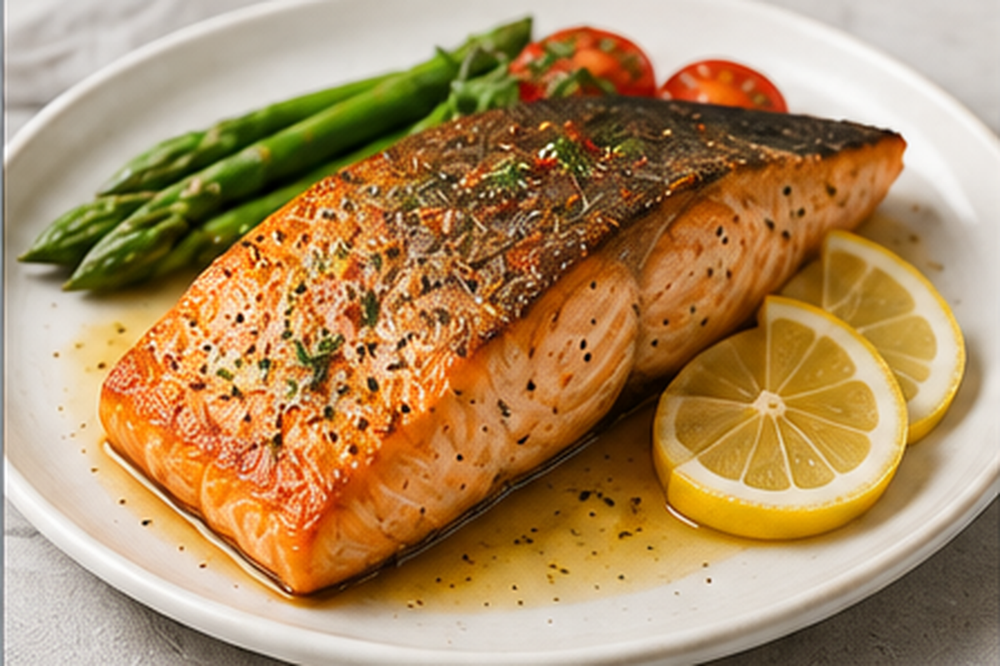
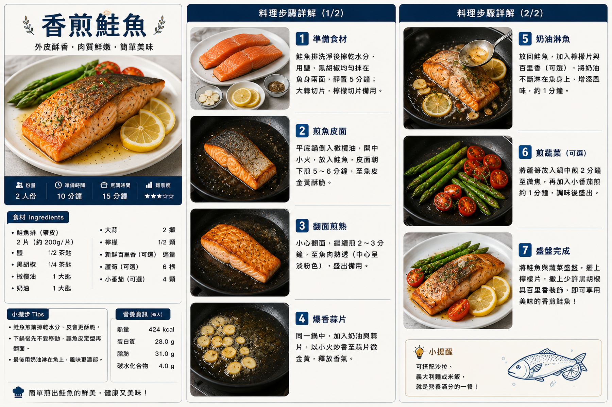

香煎鮭魚
鮭魚以橄欖油煎出金黃酥香外皮，再用奶油與蒜香提味，搭配檸檬與蔬菜，簡單完成鮮嫩多汁的一餐。
食譜指南
點擊可放大檢視 🔍
料理步驟
共 7 步01
鮭魚擦乾表面水分，兩面均勻撒上食鹽與黑胡椒粉，靜置約 5 分鐘；大蒜切片、檸檬切片備用。
02
平底鍋加入橄欖油，中火加熱後放入鮭魚，魚皮朝下煎約 5～6 分鐘，期間不要頻繁移動，煎至魚皮金黃酥脆。
03
小心將鮭魚翻面，再煎約 2～3 分鐘，直到魚肉中心熟透但仍保持嫩度，先盛出備用。
04
原鍋轉小火，加入奶油與大蒜片，慢慢煎至蒜片微金黃並釋放香氣。
05
將煎好的鮭魚放回鍋中，用湯匙把融化的蒜香奶油反覆淋在魚肉表面約 1 分鐘，增加香氣與濕潤度。
06
另以鍋中餘油煎蘆筍約 2 分鐘，再加入切半的番茄煎約 1 分鐘，熟度合適後撒少量黑胡椒粉即可。
07
鮭魚與蔬菜盛盤，放上檸檬片，食用前擠少量檸檬汁提味即可。